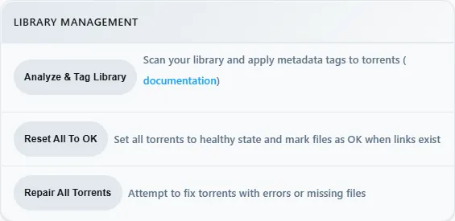

rex with zurg
rex is a Plex Media Server that owns no files. The official Plex apps see it as a normal Plex server. zurg sends it your debrid library, and when you press play rex streams the file straight from zurg. Nothing is downloaded first.
This page takes you from nothing to playing a movie, one step at a time. Every step says what it does, why it matters and what you should see before you move on. If what you see does not match, stop there: the next step will not fix it.

Three things to know before you start:
- zurg is the part that talks to your debrid service. It lists what is in your account and serves the files.
- rex is the part your Plex apps talk to. It keeps no files and needs no disk for media. It does not need rclone or a mount.
- zurg tells rex about itself. You give zurg one line, the address of rex, and zurg does the rest. You never type zurg's details into rex.
rex opens as a closed beta for sponsors on October 15 and reaches the public on October 31. See rex.debridmediamanager.com for access.
Before you start
You do not need your Plex token.
Step 1. Install zurg
What it does. Downloads zurg, asks for your debrid account and starts zurg as a service that comes back after a reboot.
Why it matters. Everything rex shows comes from zurg. If zurg cannot see your library, rex never will.
curl -fsSL https://zurg.debridmediamanager.com/install.sh | bashThe installer asks which services you use (type 1 for Real-Debrid) and then for your API token. The token is hidden while you paste it. zurg goes into ~/zurg; to put it elsewhere, start the line with ZURG_INSTALL_DIR=/path/you/want after the |.
Then let your services keep running when you log out:
loginctl enable-linger "$USER"What you should see. The installer ends with a list of PASS lines (config, ffprobe, rclone, service, HTTP, mount) and ==> zurg is installed in /home/you/zurg. Then check that zurg sees your library:
ls /mnt/zurg/movies /mnt/zurg/showsYou see a folder for each movie and show in your debrid account. You can also open zurg's dashboard at http://<LAN IP>:9999: Library size counts your items.
If not. A FAIL line says which part is wrong. An empty movies folder on an account that has movies usually means zurg is still loading a big library: wait a minute and look again.
Already run zurg? Update it with zurg update and restart it. You need a nightly from 2026.10.15 or later; older builds never tell rex where their files are.
Step 2. Download rex
What it does. Puts the rex program in ~/rex.
Why it matters. rex is one program plus a data/ folder it reads at start. It must be v0.3.0 or newer: v0.2.0 cannot take a library from zurg.
mkdir -p ~/rex && cd ~/rex
gh release download v0.3.0 -R debridmediamanager/rex -p 'rex-v0.3.0-linux-amd64.tar.gz'
tar xzf rex-v0.3.0-linux-amd64.tar.gz --strip-components=1 && rm rex-v0.3.0-linux-amd64.tar.gzOn an ARM machine (Raspberry Pi, Ampere) use linux-arm64 in both places. Newer versions are listed on rex's releases.
What you should see.
ls ~/rexshows data docs examples LICENSE README.md rust. The program itself is ~/rex/rust/target/release/rex. Always start it from ~/rex.
Step 3. Give rex your TMDB key
What it does. Stores the key in a file only you can read, which rex loads when it starts.
Why it matters. Without the key rex cannot tell that Sintel.mp4 is the 2010 film Sintel, so titles show without posters or summaries and Fix Match finds nothing.
cd ~/rex
echo 'TMDB_KEY=paste_your_key_here' > rex.env
chmod 600 rex.envWhat you should see. ls -l rex.env shows -rw-------.
Optional lines for the same file:
Step 4. Check zurg's folders
What it does. Makes sure every folder zurg sorts your library into has a library in rex.
Why it matters. The first time rex starts it creates two libraries: Debrid Movies for zurg's movies folder and Debrid TV for shows. A file in any other folder is refused, and rex keeps its libraries from that first start on.
ls /mnt/zurgWhat you should see. Besides folders that start with __ and version.txt, only movies and shows. That is what zurg setup writes, and you can go straight to step 5.
If you see more, for example anime, create rex's libraries yourself now, naming every folder:
cd ~/rex
rust/target/release/rex catalog --seed --name myrex --out rex.db \
--movies movies --shows shows --shows animeIt answers wrote rex.db: an empty library, machine=....
Step 5. Start rex for the first time
What it does. Starts rex in this terminal so you can watch what it does. Step 9 turns it into a service.
Why it matters. The first start creates rex.db, which holds the libraries, everything zurg sends, and your watch history.
cd ~/rex
set -a; . ./rex.env; set +a
rust/target/release/rex --catalog rex.db --friendly-name myrex \
--zurg-mount /mnt/zurg \
--owner-username <your Plex username> --owner-email <your Plex email>--friendly-nameis the server name your Plex apps show.--zurg-mountis zurg'smount_path,/mnt/zurgunless you changed it.- Plex Media Server runs on the same machine? Add
--port 32500 --gdm offand use32500wherever this page says32400. Plex already holds port 32400 and the ports apps use to find servers.
What you should see. rex keeps running and prints:
INFO seeded rex.db: an empty library named myrex at /mnt/zurg, machine=...
INFO no source yet: one registers at PUT /rex/sources/{name} (docs/feed-api.md)
INFO claim state: unclaimed
INFO rex on http://yourhost:32400 machine=... items=0 parts=proxy
INFO GDM discovery on udp/32410,32414 (group 239.0.0.250) as 'myrex'no source yet is right: zurg has not been told about rex. Leave this terminal open and use a second one for the next steps.
Step 6. Connect zurg to rex
What it does. Tells zurg where rex is. zurg then introduces itself to rex (its address and login) and sends its whole library, then every change as it happens.
Why it matters. This is the only link between the two. rex has no setting for zurg: if this line is missing, rex stays empty.
Add one line to the end of zurg's config, with your machine's LAN IP:
echo 'rex_url: http://192.168.1.20:32400' >> ~/zurg/config.yml
systemctl --user restart zurgWhat you should see. Within a few seconds the rex terminal prints:
INFO SOURCES PUT /rex/sources/zurg -> 200
INFO FEED zurg held movies/Sintel/Sintel.mp4: no media_info yet
INFO FEED zurg upsert: 0 created, 0 updated, 2 held, 0 unchanged, 0 rejected
INFO FEED PUT /rex/feed/zurg/snapshot -> 200and curl -s http://127.0.0.1:32400/rex/sources answers with zurg's address:
{"size":1,"sources":[{"name":"zurg","url":"http://192.168.1.20:9999/dav","mount":"/mnt/zurg"}]}held ... no media_info yet is expected. rex lists each file with its video and audio details, the way Plex does after a scan, and zurg has not read them yet. Step 7 does that.
If not.
- Nothing at all in rex's terminal: zurg is older than 2026.10.15 (
zurg update), orrex_urlhas a typo.journalctl --user -u zurg -n 50shows zurg's side. rejectedin the upsert line: a zurg folder has no library in rex. Go back to step 4.
Three rules for this line:
- Use the LAN IP, not
localhostand not a Tailscale address. - Leave
plex_server_urlin zurg's config pointing at your real Plex, or empty. Pointed at rex, zurg learns rex's own matches and a wrong match could never be fixed. - Running several zurgs (one per debrid service)? Give each its own name with an extra line,
rex_source: rd,rex_source: tband so on. They fill the same two libraries.
Step 7. Fill the library
What it does. zurg reads each file's video and audio details with ffprobe and sends them to rex. rex then names each title on TMDB and shows it.
Why it matters. A file only appears in rex once its details have arrived. zurg does this by itself for anything you add from now on, and for the rest of your library half an hour after it starts and then once a day. Pressing the button starts it now.
Open zurg's dashboard at http://<LAN IP>:9999, press Utilities, and under Library management press Analyze & Tag Library.

What you should see. rex's terminal names each title as its details arrive:
INFO FEED identified "Sintel.mp4" -> single tt1727587 (tmdb)
INFO FEED zurg upsert: 2 created, 0 updated, 0 held, 0 unchanged, 0 rejectedA handful of titles take seconds. zurg reads about 50 files a minute, so 10,000 items take a few hours; they appear as they go. If you restart zurg before it finishes, press the button again: it skips what is done.
From now on anything you add to your debrid account shows up by itself. On our test machine a 14-episode season added on Real-Debrid had its first episode in rex 10 seconds later and all 14 within half a minute.
Step 8. Watch something
What it does. Opens rex in a Plex app, the same way you would open any Plex server.
Why it matters. This is the point of the whole setup. It also proves the last link: rex reading a file from zurg while you watch.
Open a Plex app on a phone, TV or computer on the same home network. rex shows up on its own as myrex, with Debrid Movies and Debrid TV. Pick a movie and press play.

What you should see. Posters, titles and years as on any Plex server. Playback starts within a few seconds.
Two things you may meet:
- "myrex server is unclaimed and not secure". A Plex app says this about any server that is not on a Plex account. Press Don't show this again, or do
Add it to your Plex account . - "This server is not powerful enough to convert video". The app cannot play the file as it is, often a web browser meeting AC3 or DTS sound, and rex has no converter yet. Plex apps on TVs and phones play most files as they are. To play everything everywhere, set up
Converting video .

Step 9. Keep rex running
What it does. Turns the command from step 5 into a service that starts with the machine and restarts if it stops.
Why it matters. Until now rex only runs while that terminal is open.
Stop rex in its terminal with Ctrl+C; nothing is lost, it saves as it goes. Then make the start script:
cd ~/rex && cp examples/run.sh.example run.sh && chmod +x run.sh
nano run.shIn run.sh:
- Change
myrex,your-plex-usernameandyou@example.comto what you used in step 5, and the port if you changed it. - Delete the four lines from
ANNOUNCE=()tofi, and the last line,"${ANNOUNCE[@]}". They are forusing rex outside your home . Left in, rex would announce the example addressrex.example.comonce you add it to your Plex account. Then remove the\at the end of the line that is now last.
Create the service file ~/.config/systemd/user/rex.service:
mkdir -p ~/.config/systemd/user
nano ~/.config/systemd/user/rex.service[Unit]
Description=rex
After=network-online.target
[Service]
WorkingDirectory=%h/rex
ExecStart=%h/rex/run.sh
Restart=always
RestartSec=5
[Install]
WantedBy=default.targetStart it:
systemctl --user daemon-reload
systemctl --user enable --now rex
journalctl --user -u rex -n 20What you should see.
INFO state file /home/you/rex/rex.db: restored
INFO source zurg: registered, feed at /rex/feed/zurg/
INFO rex on http://yourhost:32400 machine=... items=18 parts=proxyrestored and registered mean it picked up where step 5 left off: same library, same zurg, nothing to redo. items counts movies, episodes, shows and seasons.
Back up ~/rex/rex.db (it holds your library, watch history and zurg's login, so keep it private) and, once you have one, claim_state.json:
sudo apt install -y sqlite3 # once
sqlite3 ~/rex/rex.db ".backup $HOME/rex/rex.db.bak"You are done. The sections below are optional.
Add it to your Plex account (optional)
What it does. Registers rex on your Plex account, as you would a real Plex server.
Why it matters. It removes the "unclaimed" notice, lets rex match titles with Plex's own metadata as well as TMDB's, and is needed before
At your own risk. rex is not made by Plex, and Plex could take action against an account that registers it. Without this step rex only answers on your home network.
- Open plex.tv/claim and copy the code. It expires in four minutes.
-
On the rex machine:
curl -X POST "http://127.0.0.1:32400/myplex/claim?token=claim-xxxxxxxxxxxx" curl -s http://127.0.0.1:32400/identity
What you should see. The second command shows claimed="1", and ~/rex/claim_state.json exists. Back that file up and never claim the same server twice: if you lose it, you have to claim again.
Use it outside your home (optional)
What it does. Gives rex an HTTPS address and tells plex.tv about it.
Why it matters. app.plex.tv and Plex apps away from home only connect to an HTTPS address that is reachable from the internet. rex has no relay, so it needs a certificate for a host name you own. It must be claimed first.
With Tailscale:
sudo tailscale cert myhost.tailnet.ts.net
openssl pkcs8 -topk8 -nocrypt -in myhost.tailnet.ts.net.key -out myhost.pkcs8.keyAdd to the exec command in run.sh, with your names and LAN IP:
--tls-cert myhost.tailnet.ts.net.crt --tls-key myhost.pkcs8.key \
--announce-url https://myhost.tailnet.ts.net:32400,http://192.168.1.20:32400Then systemctl --user restart rex. HTTPS and plain HTTP share the port, so zurg keeps using http://.
What you should see. rex's log gets plex.tv lines without errors, and the server appears in app.plex.tv. If it logs waiting for a claim, do the previous section first.
Do not put a Cloudflare tunnel in front of rex. Cloudflare drops the range of the first read, so every play start pulls the whole file from your debrid service.
Converting video (optional)
What it does. Lets rex convert what a device cannot play, the way Plex does.
Why it matters. Without it a device that cannot play a file as it is gets "This server is not powerful enough to convert video". Web browsers hit this most, for example with AC3 or DTS sound.
Unpack jellyfin-ffmpeg 8 (Ubuntu's own FFmpeg 4.4 is too old) and point rex at it:
curl -LO https://github.com/jellyfin/jellyfin-ffmpeg/releases/download/v8.1.3-1/jellyfin-ffmpeg8_8.1.3-1-jammy_amd64.deb
dpkg -x jellyfin-ffmpeg8_8.1.3-1-jammy_amd64.deb ~/rex-ffmpeg && rm jellyfin-ffmpeg8_8.1.3-1-jammy_amd64.deb
J=$HOME/rex-ffmpeg/usr/lib/jellyfin-ffmpeg
printf 'REX_TRANSCODER=%s/ffmpeg\nLD_LIBRARY_PATH=%s/lib\nLIBVA_DRIVERS_PATH=%s/lib/dri\nLIBVA_DRIVER_NAME=iHD\n' "$J" "$J" "$J" >> ~/rex/rex.env
systemctl --user restart rexWith an Intel or AMD graphics chip, also run sudo usermod -aG render "$USER" and log in again; in an LXC, pass the GPU through. The chip makes conversion fast; without one rex uses the processor.
What you should see. rex's log has a transcoder: line naming the FFmpeg and the hardware it found (hardware none means the processor). A file that failed before now plays; the log shows what was converted, for example video=copy h264 audio=ac3->aac.
Run rex in Docker
ghcr.io/debridmediamanager/rex carries the same Linux build as the release, for amd64 and arm64. Like zurg's sponsor image it is private, so log in once with your GitHub username and a classic personal access token with the read:packages and repo scopes:
docker login ghcr.io -u YOUR_GITHUB_USERNAMEMake a folder for it with this compose.yml:
services:
rex:
image: ghcr.io/debridmediamanager/rex:latest
container_name: rex
restart: unless-stopped
network_mode: host
environment:
TMDB_KEY: your_tmdb_api_key
volumes:
- ./config:/config
command: >
--friendly-name myrex --zurg-mount /zurg_mnt/zurg
--owner-username <your Plex username> --owner-email <your Plex email>- Everything rex keeps (
rex.db,claim_state.json) lands in./config. Back up that folder. network_mode: hostlets Plex apps on your network find rex on their own and lets rex reach zurg the same way it would without Docker.--zurg-mountis zurg'smount_path;/zurg_mnt/zurgis what zurg's Docker setup uses.- Plex Media Server on the same machine? Add
--port 32500 --gdm offtocommand.
zurg has anime or other directories? Name them before the first start (step 4):
docker compose run --rm rex catalog --seed --name myrex --out /config/rex.db \
--movies movies --shows shows --shows animeStart it and follow the log:
docker compose up -d
docker compose logs -f rexThe first start logs seeded /config/rex.db. Then carry on with rex_url is http://<this machine's LAN IP>:32400. The claim is the same curl on this machine. For HTTPS, put the certificate files in ./config and add --tls-cert /config/<name>.crt --tls-key /config/<name>.pkcs8.key --announce-url ... to command.
To update:
docker compose pull && docker compose up -dlatest follows each release; pin a version such as ghcr.io/debridmediamanager/rex:0.3.0 to update only when you choose. The image carries no FFmpeg, so
Keep the port private
rex takes no password from zurg. Anyone who can reach rex's port can add to its library or remove what zurg sent. Never forward port 32400 (or 32500) on your router without the HTTPS setup above.
Updating
- zurg:
zurg update, thensystemctl --user restart zurg. - rex: download the new release into
~/rexas in step 2 (it replaces the program anddata/, and leavesrex.db,rex.envandrun.shalone), thensystemctl --user restart rex.